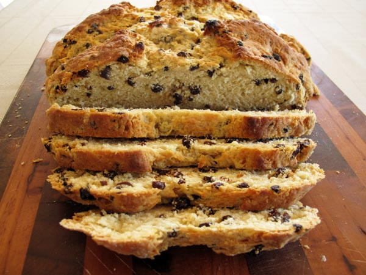

A family favorite. Great with corned beef, or for breakfast.

Ingredients:
- 2 cups unbleached all purpose flour, plus additional for sprinkling
- ¼ cup wheat bran (not bran cereal) or toasted wheat germ
- 1 tsp baking soda
- ½ tsp salt
- ½ stick ( ¼ cup) unsalted butter, cold, cut into bits
- 1 cup golden raisins
- 1 cup buttermilk or plain yogurt
Instructions:
- Preheat oven to 400 degrees and sprinkle a baking sheet lightly with flour.
- In a large bowl whisk together flour, bran or wheat germ, baking soda, and salt.
- Add butter and toss to coat with flour.
- With fingertips rub in butter until mixture resembles coarse meal.
- Add raisins and toss until coated.
- Add buttermilk or yogurt and stir until dough is moistened evenly.
- On a floured surface knead dough 1 minute, sprinkling lightly with additional flour to prevent sticking (dough should remain soft).
- Shape dough into a ball.
- On prepared baking sheet pat dough out into a 6 inch round.
- Sprinkle round with additional flour and with fingertips spread lightly over round.
- With a sharp knife cut a shallow X in top of round.
- Bake bread in middle of oven 35 to 45 minutes or until golden brown.
- Wrap bread in a kitchen towel and cook on a rack 1 hours.
- Unwrap bread and cool 1 hour more.